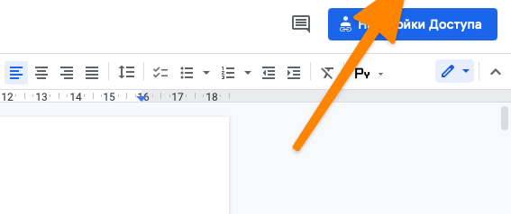
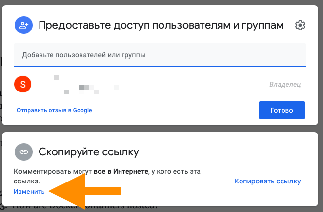
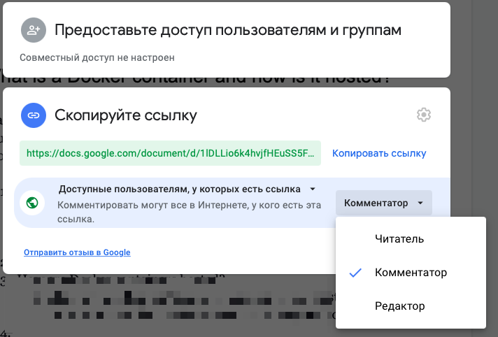

Совместная работа
В Google Drive можно буквально в два клика предоставить доступ к документу, над которым вы работаете, другим пользователям: на проверку, для ознакомления или для совместного редактирования.
Чтобы это сделать:
1. Нужно открыть документ, которым вы хотите поделиться.
2. Нажать на кнопку «Настройки доступа» в верхнем правом углу.
3. Затем кликнуть по кнопке «Изменить», чтобы сгенерировать ссылку на документ и поменять уровень доступа.
4. После этого нужно нажать на кнопку «Скопировать ссылку» и предоставить ее нужному человеку.
